Le certificat expire dans 14 mois : qui dirige l’hôpital ?
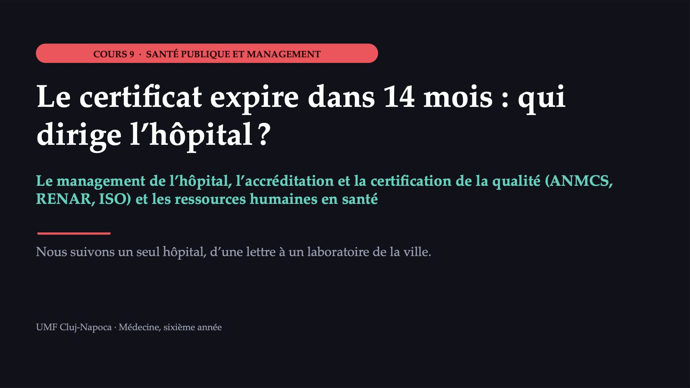
1 / 55L’Hôpital départemental A reçoit une lettre
![ACTE I · LA SITUATION L’Hôpital départemental A reçoit une lettre L’HÔPITAL 700 lits, 21 services et unités, laboratoire, radiologie et service des urgences LA LETTRE le certificat d’accréditation expire dans 14 mois ; sans réaccréditation, le contrat avec la caisse d’assurance maladie est menacé JEUDI le manager convoque le comité de direction ; la neurologie n’a pas pu documenter sa couverture en médecins Qui devrait diriger la préparation de la réaccréditation ? Cas construit pour le cours ; les détails sont plausibles, non réels. Cas construit ; valeurs hypothétiques.](diapozitive/C09/002.jpg) 2 / 55
2 / 55Qui devrait diriger la préparation de la réaccréditation ?
![MENTIMETER · VOTE 1 PREMIÈRE DÉCISION Qui devrait diriger la préparation de la réaccréditation ? A Le manager, seul, parce que c’est lui qui signe le contrat de management B Le directeur médical, par l’intermédiaire du conseil médical, parce que l’évaluation porte sur les soins aux patients C Le comité de direction, avec la structure de management de la qualité comme noyau de travail et les chefs de service responsables de leurs services D Un cabinet de conseil, payé pour préparer le dossier Vote individuel, sans discussion. Répondez sur votre téléphone, au code affiché. [code QR Mentimeter]](diapozitive/C09/003.jpg) 3 / 55
3 / 55Convainquez qui a voté autrement
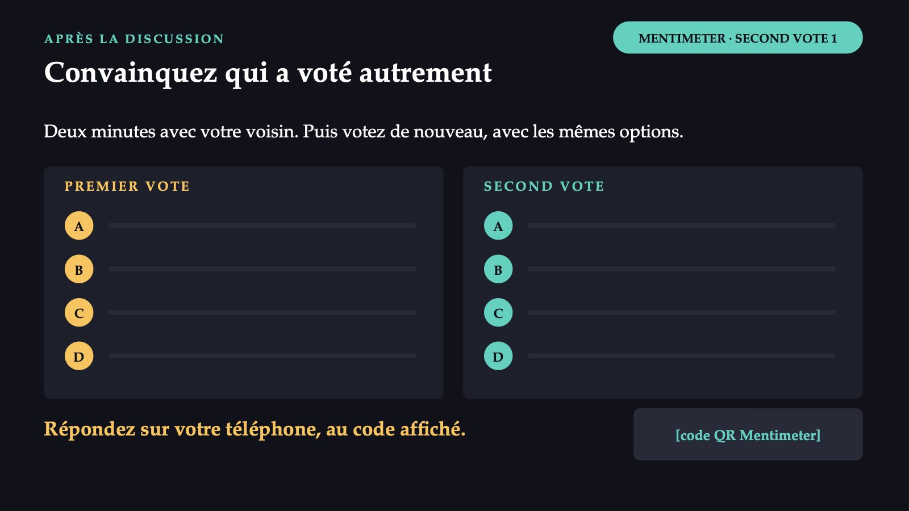
4 / 55Deux lignes d’autorité dans un même hôpital
 5 / 55
5 / 55L’organigramme simplifié de l’Hôpital départemental A
![ORGANIGRAMME · CAS CONSTRUIT L’organigramme simplifié de l’Hôpital départemental A Conseil d’administration 1 Le manager 4 COMITÉ DE DIRECTION manager · directeur médical · directeur des soins · directeur financier et comptable LIGNE ADMINISTRATIVE LIGNE MÉDICALE RUNOS (ressources humaines) Financier et comptable Achats Technique Juridique Structure de management de la qualité 5 Conseil médical présidé par le directeur médical 3 Services 2 Laboratoires Services médicaux chefs nommés sur concours ou examen Les numéros 1 à 5 renvoient aux questions de la diapositive suivante.](diapozitive/C09/006.jpg) 6 / 55
6 / 55Cinq questions, une réponse courte à chacune
![MENTIMETER · ORGANIGRAMME ANALYSE DE L’ORGANIGRAMME Cinq questions, une réponse courte à chacune 1 Qui nomme le manager ? 2 À qui répond le chef du service de neurologie, sur la ligne médicale et sur la ligne administrative ? 3 Qui préside le conseil médical ? 4 Qui approuve le nombre de postes du service ? 5 Où apparaît, dans l’organigramme, la structure de management de la qualité ? Réponses courtes, anonymes. Répondez sur votre téléphone, au code affiché. [code QR Mentimeter]](diapozitive/C09/007.jpg) 7 / 55
7 / 55La même structure, dans un hôpital réel
![UN HÔPITAL RÉEL La même structure, dans un hôpital réel Le manager COMITÉ DE DIRECTION · CINQ MEMBRES 1 · Manager 2 · Directeur médical 3 · Directeur financier et comptable 4 · Directeur des soins 5 · Médecin épidémiologiste, coordonnateur du compartiment de prévention des infections Le service de management de la qualité : subordonné directement au manager Le conseil médical, sous la présidence du directeur médical chefs de service, de laboratoire et de services médicaux, pharmacien en chef, infirmier en chef 25 services 6 compartiments distincts 19 compartiments au sein des services La loi : trois membres, quatre au-delà de 400 lits. D’après le ROF 2024 (règlement d’organisation et de fonctionnement), document marqué « PROJET » ; schéma dessiné à partir du texte. Cinquième membre : renvoi à l’Ordinul nr. 1101/2016, non vérifié par nous. Source : ROF de l’Hôpital départemental d’urgence de Bacău, 2024 (PROJET).](diapozitive/C09/008.jpg) 8 / 55
8 / 55Qui peut être manager et quelle est la durée du contrat
![LE MANAGER Qui peut être manager et quelle est la durée du contrat CONDITIONS, CUMULATIVES licence en médecine, médecine dentaire, sciences juridiques ou économiques ; master dans la spécialité du poste (les diplômés de médecine et de médecine dentaire en sont dispensés) ; au moins cinq ans d’ancienneté LE CONTRAT DE MANAGEMENT quatre ans au plus ; évaluation annuelle sur des indicateurs ; révocation si les indicateurs ne sont pas atteints pendant au moins un an, pour des raisons imputables au manager Un économiste titulaire d’un master peut diriger un hôpital départemental ; un médecin peut être candidat même sans master.](diapozitive/C09/009.jpg) 9 / 55
9 / 55Trois questions sur la même table
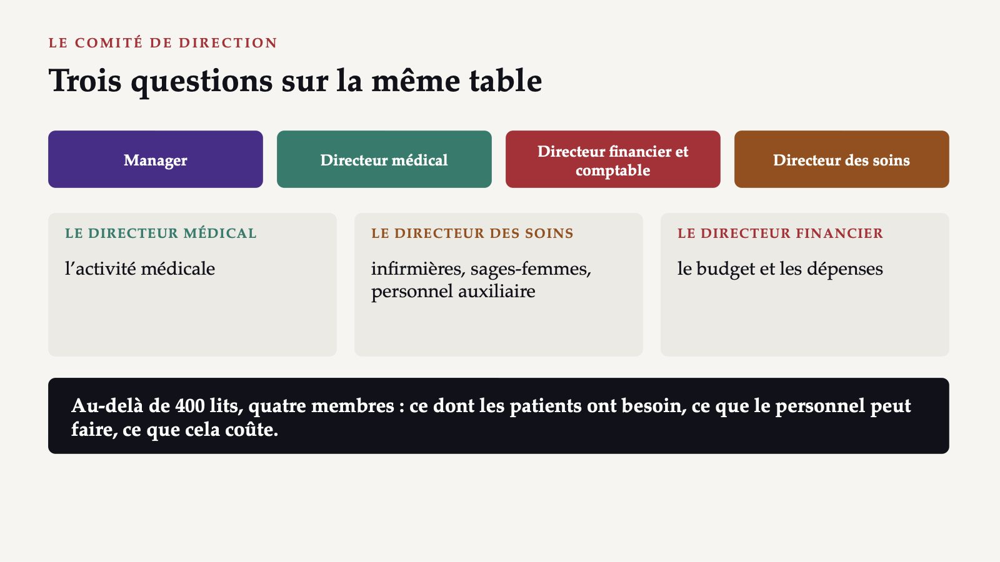
10 / 55La ligne médicale : les chefs de service
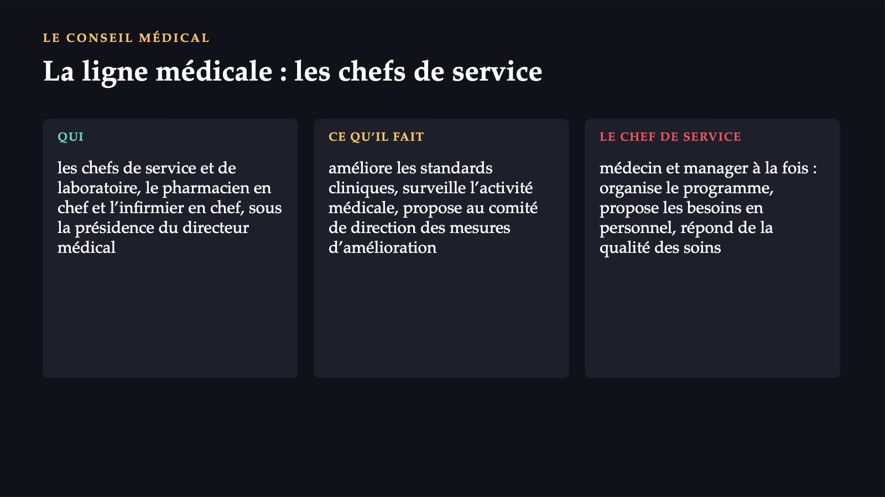
11 / 55La dernière case : la qualité, de l’intérieur
![LA STRUCTURE DE MANAGEMENT DE LA QUALITÉ La dernière case : la qualité, de l’intérieur CE QUE C’EST les hôpitaux doivent avoir une telle structure, qui assure et surveille de l’intérieur la qualité des services OÙ ELLE SE SITUE sa place dans l’organigramme est fixée par chaque hôpital ; dans l’organigramme du cas, elle est placée sous le manager Un choix du cas construit, non une règle citée dans les notes. Comment elle fonctionne en pratique : au cours suivant. Source : analyse du système de santé de la Roumanie (OMS Europe et Observatoire européen), 2026.](diapozitive/C09/012.jpg) 12 / 55
12 / 55Cinq questions, cinq réponses
![ANALYSE DE L’ORGANIGRAMME · CE QUE DISENT LES NOTES Cinq questions, cinq réponses 1 Le manager : après le concours organisé par le conseil d’administration (art. 177). 2 Le chef de service : sur la ligne médicale, dans le conseil médical ; le budget et les postes sont décidés par le manager. 3 Le conseil médical : présidé par le directeur médical (art. 186). 4 Les postes : approuvés par le manager, selon la norme en vigueur (art. 180). 5 La structure de qualité : sous le manager, dans l’organigramme du cas ; l’hôpital choisit sa place. La structure est exigée ; l’hôpital choisit sa place.](diapozitive/C09/013.jpg) 13 / 55
13 / 55C : le comité de direction, avec la structure de qualité comme noyau
![PREMIÈRE DÉCISION · CE QUE DISENT LES NOTES C : le comité de direction, avec la structure de qualité comme noyau A Contredit l’organisation : le comité de direction existe pour que les grandes décisions soient prises ensemble. B Part de vérité, mais le directeur médical ne contrôle ni le budget, ni les postes, ni les achats. C La plus proche de l’organisation prévue par la loi ; le noyau de travail est un jugement d’organisation, non une disposition. D Peut aider pour les documents, mais ne remplace pas l’hôpital : l’évaluation vérifie ce qui se passe dans les services. Un dossier préparé de l’extérieur se voit dès la première discussion avec une infirmière.](diapozitive/C09/014.jpg) 14 / 55
14 / 55Qu’est-ce que l’accréditation d’un établissement de santé
![9.2 · L’ACCRÉDITATION DE L’HÔPITAL Qu’est-ce que l’accréditation d’un établissement de santé La validation de la conformité des services aux standards de l’ANMCS (l’autorité nationale roumaine de la qualité), par une évaluation externe à l’issue de laquelle l’établissement est classé dans une catégorie d’accréditation. STANDARDS un ensemble écrit, approuvé par l’autorité VÉRIFICATION évaluateurs externes, indépendants des parties prenantes CLASSEMENT catégories d’accréditation, avec liste publique Le cycle d’accréditation et le certificat : cinq ans. Source : loi sur la qualité en santé (Loi n° 185/2017).](diapozitive/C09/015.jpg) 15 / 55
15 / 5525
16 / 55De l’inscription au certificat
![LES ÉTAPES DE L’ACCRÉDITATION De l’inscription au certificat L’ÉTAPE CE QUE FAIT L’HÔPITAL CE QUE FAIT L’ANMCS L’inscription Dépose le dossier, une fois la mise en œuvre du système de qualité commencée Approuve la méthodologie et les délais La redevance Paie la redevance pour un cycle d’accréditation Fixe le calcul, par arrêté commun avec le ministère de la Santé L’évaluation Reçoit les évaluateurs, met à disposition les documents et le personnel Évalue, par des évaluateurs externes La décision Reçoit la catégorie d’accréditation Publie la liste au Journal officiel (Monitorul Oficial) La validité Prépare la réaccréditation avant l’expiration Délivre le certificat, valable cinq ans Source : loi sur la qualité en santé (Loi n° 185/2017).](diapozitive/C09/017.jpg) 17 / 55
17 / 55Sans accréditation, pas de contrat avec la caisse
![POURQUOI C’EST IMPORTANT Sans accréditation, pas de contrat avec la caisse L’ENJEU les hôpitaux doivent être accrédités tous les cinq ans pour obtenir un contrat avec l’assurance maladie ; sans contrat, un hôpital public perd la plus grande partie de ses revenus EXCEPTIONS obligatoire aussi pour les établissements sans contrat avec la caisse, sauf les cabinets médicaux et les laboratoires d’analyses médicales (art. 7 al. (5)) LA LIMITE les rapports ne sont pas publics : le patient connaît le statut de l’hôpital, non ce que les évaluateurs ont constaté Source : analyse du système de santé de la Roumanie (OMS Europe et Observatoire européen), 2026.](diapozitive/C09/018.jpg) 18 / 55
18 / 558
![CE QUE NOUS SAVONS DES EFFETS Une accréditation utile ? Preuves limitées 8 revues systématiques sur l’accréditation des hôpitaux (synthèse de 2019), avec des études surtout hors d’Europe LA CONCLUSION les preuves sur l’effet sur la qualité des soins sont limitées : il existe très peu d’études contrôlées CE QUI SEMBLE CHANGER la manière dont les hôpitaux se préparent à l’évaluation ; l’effet sur les soins et sur les résultats cliniques n’est pas établi L’accréditation oblige l’hôpital à écrire ses procédures, mais ne garantit pas, à elle seule, de meilleurs soins. Source : Observatoire européen des systèmes et des politiques de santé, synthèse de 2019.](diapozitive/C09/019.jpg) 19 / 55
19 / 55La neurologie, à l’autoévaluation
![ACTE II · LA COMPLICATION La neurologie, à l’autoévaluation LA NEUROLOGIE 35 lits ; deux médecins spécialistes et le chef de service LE PLANNING beaucoup de jours, un seul médecin a couvert le service et les consultations aux urgences SOINS INTENSIFS deux infirmières ont démissionné pour travailler à l’étranger ; trois collègues sont en arrêt maladie prolongé LE CHEF DE SERVICE « au moins deux médecins de plus » LE DIRECTEUR FINANCIER ET COMPTABLE le tableau des effectifs respecte la norme de personnel Cas construit pour le cours ; les détails sont plausibles, non réels.](diapozitive/C09/020.jpg) 20 / 55
20 / 55Comment le comité de direction sait-il combien de médecins manquent à la neurologie ?
![MENTIMETER · VOTE 2 DEUXIÈME DÉCISION Comment le comité de direction sait-il combien de médecins manquent à la neurologie ? A Il applique la norme de personnel en vigueur, que le tableau des effectifs respecte déjà B Il mesure la charge réelle des médecins (admissions, journées d’hospitalisation, consultations) et la compare au temps de travail disponible C Il compare la densité de médecins du département à la moyenne européenne D Il accepte la demande du chef de service, qui connaît le mieux son service Vote individuel, sans discussion. Répondez sur votre téléphone, au code affiché. [code QR Mentimeter]](diapozitive/C09/021.jpg) 21 / 55
21 / 55Deux collègues, deux minutes, un énoncé
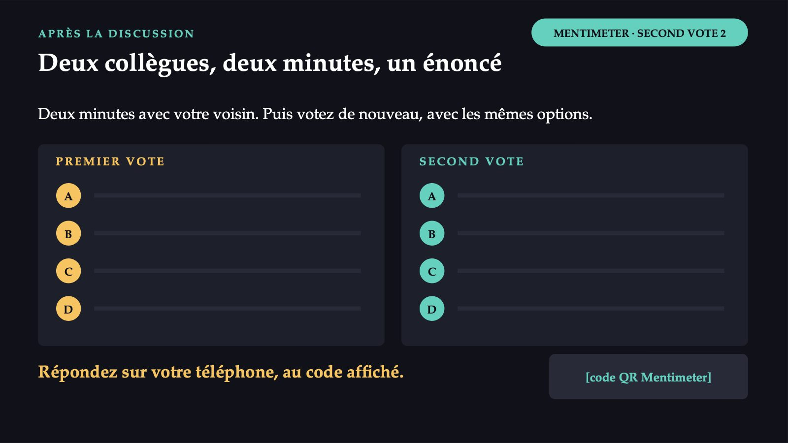
22 / 55Pourquoi « ce que demande la norme » ne suffit pas
![LA NORME ET LE TRAVAIL RÉEL Pourquoi « ce que demande la norme » ne suffit pas LA NORME la loi lie le nombre de postes à la norme de personnel en vigueur ; le tableau des effectifs de la neurologie la respecte LA LIMITE DES MÉTHODES rapporter les travailleurs à la population et appliquer des standards par type d’établissement ignore la variation de la demande et le travail effectif LA MÉTHODE WISN des indicateurs de charge pour les besoins en personnel, à partir du travail effectif ; manuel de l’OMS, deuxième édition, 2023 La neurologie respecte la norme, et pourtant le planning montre des jours avec un seul médecin. Source : OMS, manuel de la méthode WISN, deuxième édition, 2023.](diapozitive/C09/023.jpg) 23 / 55
23 / 55Du temps disponible à la charge standard
![WISN · ÉTAPES 1 À 5 Du temps disponible à la charge standard LE TEMPS DISPONIBLE les jours ouvrables possibles dans une année, sans jours fériés, congés annuels, arrêts maladie ni formation LE STANDARD D’ACTIVITÉ le temps d’un travailleur bien formé pour une activité, à une qualité acceptable LA CHARGE STANDARD combien d’unités un travailleur réalise en un an : le temps disponible divisé par le standard D’abord : la catégorie de personnel, le type d’établissement, les composantes de l’activité. Source : OMS, manuel de la méthode WISN, deuxième édition, 2023.](diapozitive/C09/024.jpg) 24 / 55
24 / 55Trois facteurs, une formule
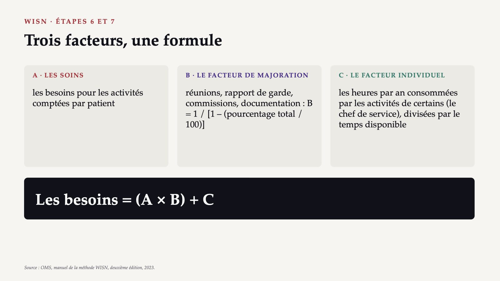
25 / 55La différence et le rapport montrent des choses différentes
![WISN · LA COMPARAISON La différence et le rapport montrent des choses différentes LA DIFFÉRENCE personnel existant moins personnel nécessaire : combien de personnes manquent ou sont en trop LE RAPPORT WISN existant divisé par nécessaire : 1 équilibre, moins de 1 personnel insuffisant, plus de 1 personnel en excès L’ARRONDI de 3,0 à 3,3 à 3 ; au-delà de 3,3 à 4 ; de 5,0 à 5,5 à 5 ; au-delà de 5,5 à 6 Une différence d’un médecin ne signifie pas la même chose sur deux médecins que sur vingt. Source : OMS, manuel de la méthode WISN, deuxième édition, 2023.](diapozitive/C09/026.jpg) 26 / 55
26 / 55260
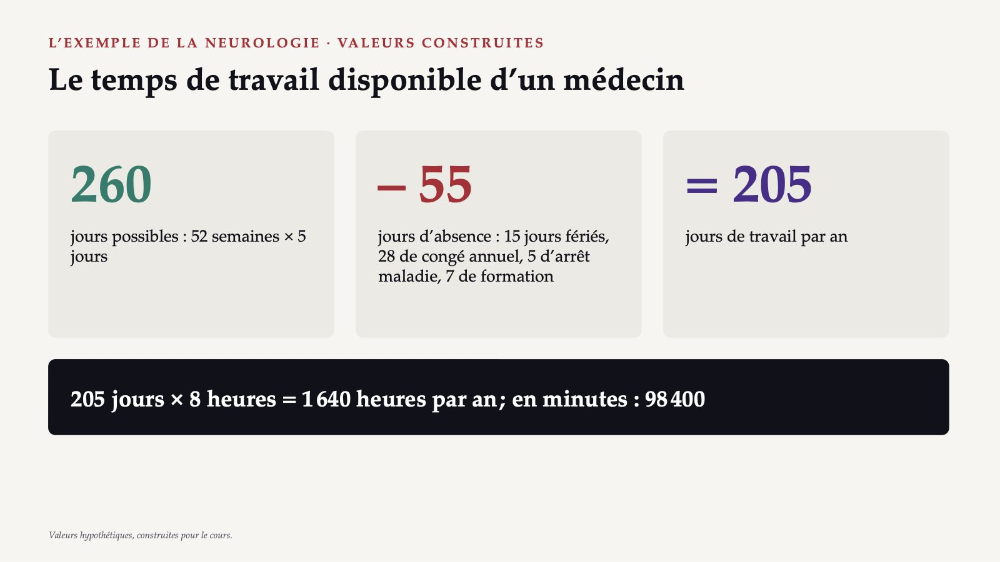
27 / 55Trois composantes des soins
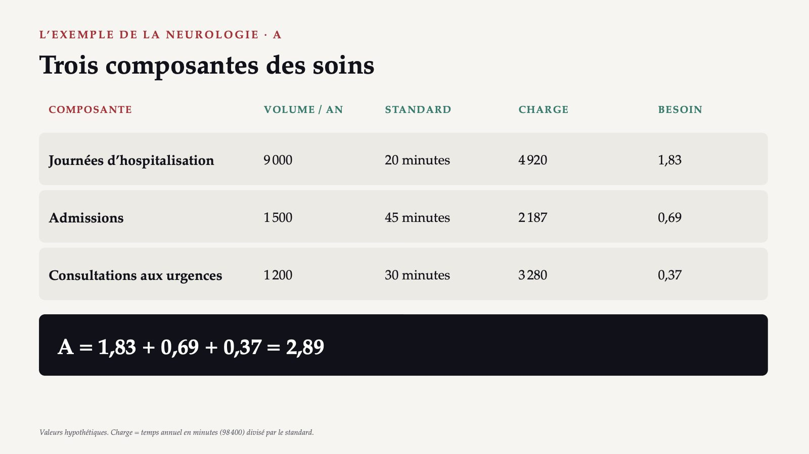
28 / 55Les facteurs et le besoin total
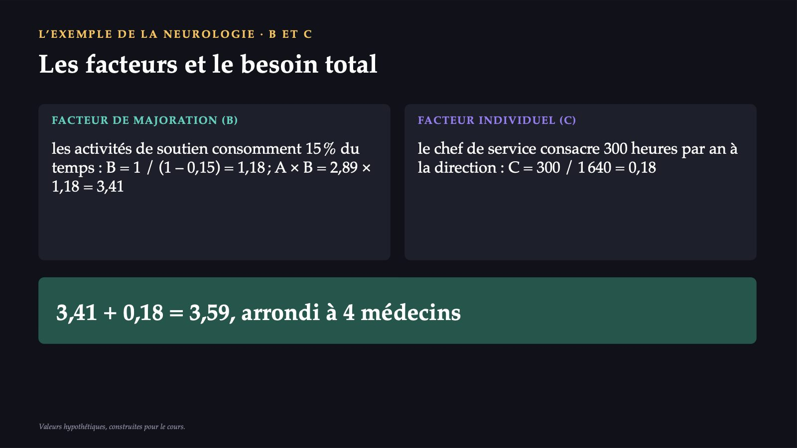
29 / 553
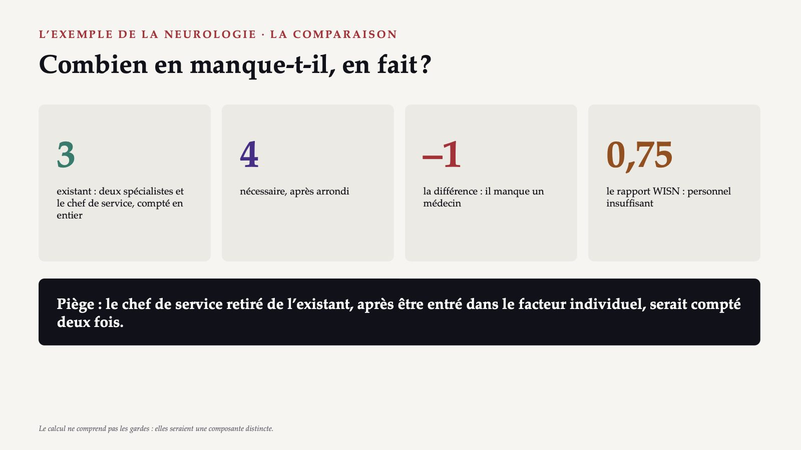
30 / 55B : mesurez la charge réelle
![DEUXIÈME DÉCISION · CE QUE DISENT LES NOTES B : mesurez la charge réelle A Obligatoire, mais insuffisant : une norme par type d’établissement ignore le travail effectif. B La méthode WISN : les besoins à partir du volume réel d’activité, comparés au personnel existant par la différence et le rapport. C Mélange les niveaux : la densité pour 100 000 habitants décrit un département, non un service. D Connaît le service, mais n’a pas de mesure commune avec les autres ; la demande devient un argument après le calcul. La demande du chef de service peut être juste, mais elle ne devient un argument qu’une fois calculée.](diapozitive/C09/031.jpg) 31 / 55
31 / 55376 188
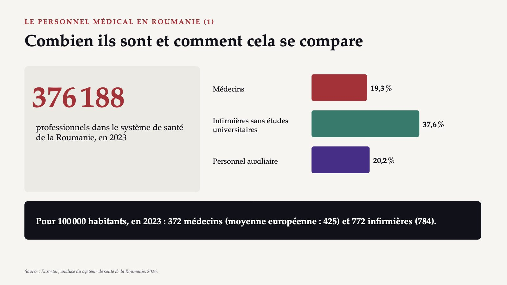
32 / 55La répartition et l’âge
 33 / 55
33 / 55Médecins et infirmières partis du pays
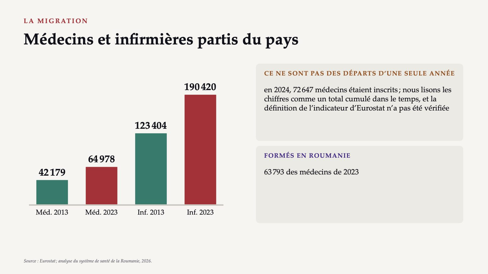
34 / 5540,3 %
![LA MIGRATION · CAUSES ET RÉPONSE Les salaires et l’intention de partir 40,3 % des médecins de moins de 35 ans envisageaient de quitter le pays (enquête, 2023) ; 17,2 % avaient une intention ferme LES SALAIRES motif déclaré ; en 2017–2018, le salaire net du résident a augmenté de 162 % (d’environ 344 à 902 euros), celui du médecin primaire de 131 % (de 913 à 2 112 euros) L’EFFET il n’existe pas de preuves publiques de l’effet de cette hausse sur la migration Source : analyse du système de santé de la Roumanie (OMS Europe et Observatoire européen), 2026.](diapozitive/C09/035.jpg) 35 / 55
35 / 55Plus d’infirmières, moins de décès ?
![INFIRMIÈRES ET SÉCURITÉ DES PATIENTS Plus d’infirmières, moins de décès ? L’ÉTUDE neuf pays européens, 2014 (Aiken et collaborateurs), citée dans la synthèse de l’Observatoire européen de 2019 LE RÉSULTAT plus de patients par infirmière : mortalité plus élevée à 30 jours ; pour 10 % d’infirmières titulaires d’une licence en plus, une probabilité de décès inférieure de 7 % L’étude a plus de dix ans : nous l’utilisons pour le mécanisme, non pour estimer l’effet dans les hôpitaux de Roumanie. Source : Observatoire européen des systèmes et des politiques de santé, synthèse de 2019.](diapozitive/C09/036.jpg) 36 / 55
36 / 55Un phénomène lié au lieu de travail
 37 / 55
37 / 55Le comité de direction élargi, deux mois après l’autoévaluation
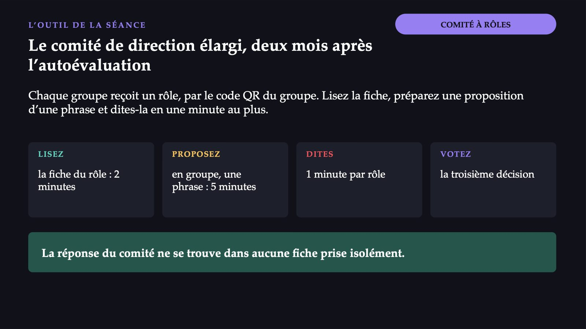
38 / 55Sept rôles, sept codes
![COMITÉ · RÔLES LES RÔLES · UN CODE QR PAR GROUPE Sept rôles, sept codes 1 Le manager [code QR rôle 1] 2 Le directeur médical [code QR rôle 2] 3 Le directeur des soins [code QR rôle 3] 4 Le directeur financier et comptable [code QR rôle 4] 5 Le chef du service des ressources humaines (RUNOS) [code QR rôle 5] 6 La responsable du management de la qualité [code QR rôle 6] 7 Le représentant des patients [code QR rôle 7] La réponse du comité ne se trouve dans aucune fiche prise isolément.](diapozitive/C09/039.jpg) 39 / 55
39 / 55Que présente l’hôpital aux évaluateurs sur le personnel de la neurologie ?
![MENTIMETER · VOTE 3 · RÔLE TROISIÈME DÉCISION Que présente l’hôpital aux évaluateurs sur le personnel de la neurologie ? A Le déficit calculé par WISN, dit ouvertement, avec un plan d’ici l’expiration du certificat B Un organigramme où figurent, à la neurologie, des médecins d’autres services, sans que leur programme change C Rien pour l’instant : nous reportons l’inscription à la réaccréditation jusqu’à ce que les postes soient pourvus D La fermeture temporaire du service de neurologie et l’envoi des patients vers un autre hôpital Chaque groupe vote depuis son rôle. Répondez sur votre téléphone, au code affiché. [code QR Mentimeter]](diapozitive/C09/040.jpg) 40 / 55
40 / 55Même rôle, même énoncé, après discussion
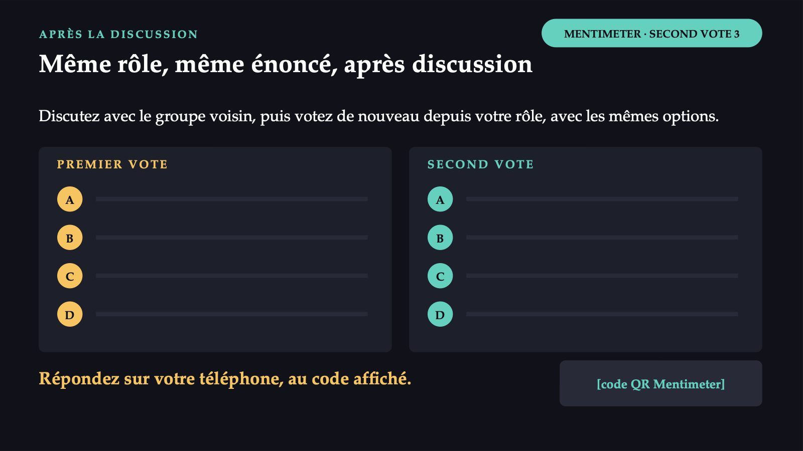
41 / 55A : le déficit dit ouvertement, avec un plan
![TROISIÈME DÉCISION · CE QUE DISENT LES NOTES A : le déficit dit ouvertement, avec un plan A L’hôpital peut le défendre : déficit mesuré par une méthode explicite, mesures qu’il maîtrise, pouvoir légal sur les postes. B Fausse déclaration : transforme un problème d’organisation en problème d’intégrité. C Sans accréditation, l’hôpital ne peut plus conclure de contrat avec l’assurance maladie : le problème devient celui de tout l’hôpital. D Déplace le problème vers les patients ; la fermeture exigerait une analyse de l’accès dans le département. Transférer des tâches administratives ne crée pas de nouveaux médecins, mais leur libère du temps pour les patients.](diapozitive/C09/042.jpg) 42 / 55
42 / 55Un nouveau laboratoire dans la ville de l’hôpital
![ACTE III · LE TRANSFERT Un nouveau laboratoire dans la ville de l’hôpital LE DOCTEUR R. médecin de laboratoire à l’Hôpital départemental A ; veut, avec deux collègues, un laboratoire privé d’analyses médicales LES PATIENTS envoyés par des médecins de famille et des spécialistes, avec remboursement par la caisse d’assurance maladie DEUX CONSEILS le consultant : « il vous faut l’ISO » ; un collègue : « l’accréditation de l’hôpital couvre aussi le laboratoire » De quoi a-t-il vraiment besoin pour le contrat avec la caisse ? Cas construit pour le cours ; les détails sont plausibles, non réels.](diapozitive/C09/043.jpg) 43 / 55
43 / 55De quoi le laboratoire a-t-il besoin pour le contrat avec la caisse d’assurance maladie ?
![MENTIMETER · VOTE 4 QUATRIÈME DÉCISION De quoi le laboratoire a-t-il besoin pour le contrat avec la caisse d’assurance maladie ? A De rien de plus : l’accréditation ANMCS de l’Hôpital départemental A couvre aussi le laboratoire B D’un certificat ISO 9001 pour le système de management de la qualité C De l’accréditation du laboratoire par le RENAR (l’organisme national roumain d’accréditation), selon la norme SR EN ISO 15189 D Seulement de l’autorisation sanitaire de fonctionnement Vote individuel, sans discussion. Répondez sur votre téléphone, au code affiché. [code QR Mentimeter]](diapozitive/C09/044.jpg) 44 / 55
44 / 55Le même énoncé, après la discussion
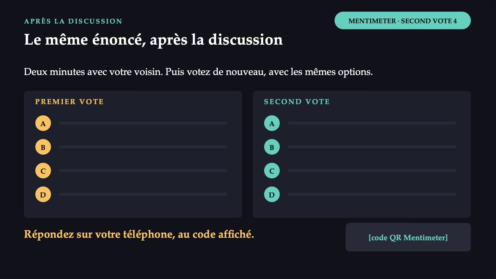
45 / 55Deux sens, deux institutions
![DEUX SENS DE L’ACCRÉDITATION Deux sens, deux institutions L’ÉTABLISSEMENT accréditation par l’ANMCS, selon les standards de l’autorité : l’hôpital comme établissement de santé L’ATTESTATION PAR UN TIERS l’accréditation comme confirmation officielle qu’un organisme est compétent pour évaluer la conformité : laboratoires, organismes de certification et d’inspection LE RENAR l’organisme national unique d’accréditation, sous la coordination du ministère de l’Économie ; il accrédite les laboratoires médicaux selon la norme SR EN ISO 15189](diapozitive/C09/046.jpg) 46 / 55
46 / 55Deux questions différentes
![ACCRÉDITATION ET CERTIFICATION Deux questions différentes L’ACCRÉDITATION Ce laboratoire est-il compétent pour réaliser les analyses pour lesquelles il a été accrédité ? La norme EN ISO 15189 porte sur les exigences de qualité et de compétence du laboratoire médical. LA CERTIFICATION Le système de management de l’organisation respecte-t-il les exigences d’une norme ISO ? Les auditeurs constatent où la norme est respectée ; le rapport ne contient pas de recommandations. Un certificat ISO 9001 ne dit pas, à lui seul, que les résultats d’un laboratoire sont corrects.](diapozitive/C09/047.jpg) 47 / 55
47 / 55Pour la santé, il existe aussi des normes propres
![AUTRES NORMES ET MODÈLES Pour la santé, il existe aussi des normes propres EN ISO 15224 de 2012, mise à jour en 2017 : adapte les exigences de l’ISO 9001 aux services de santé ; accent sur les processus cliniques et leurs risques JOINT COMMISSION (JCI) Joint Commission International, modèle international d’accréditation et de certification ; en Europe, environ 80 hôpitaux accrédités (synthèse de 2019) LE CONTRAT AVEC LA CAISSE en Roumanie, c’est l’accréditation ANMCS qui compte Source : Observatoire européen des systèmes et des politiques de santé, synthèse de 2019.](diapozitive/C09/048.jpg) 48 / 55
48 / 55La comparaison, en bref
![TROIS FORMES D’ÉVALUATION EXTERNE La comparaison, en bref ACCRÉDITATION DE L’ÉTABLISSEMENT ACCRÉDITATION DU LABORATOIRE CERTIFICATION DU SYSTÈME Qui la réalise L’ANMCS Le RENAR Un organisme de certification, reconnu par l’organisme national d’accréditation Selon quoi Les standards de l’ANMCS SR EN ISO 15189 ISO 9001 ou EN ISO 15224 Ce qu’elle confirme La conformité des services aux standards La compétence pour réaliser des analyses La conformité du système de management En Roumanie Les hôpitaux, pour le contrat avec la caisse Les laboratoires hors hôpitaux, pour le contrat Preuve d’un système ; ne remplace pas l’accréditation](diapozitive/C09/049.jpg) 49 / 55
49 / 55C : l’accréditation du laboratoire, par le RENAR
![QUATRIÈME DÉCISION · CE QUE DISENT LES NOTES C : l’accréditation du laboratoire, par le RENAR A Confond les institutions : les laboratoires d’analyses médicales sont exceptés de l’accréditation obligatoire ANMCS (art. 7 al. (5)). B Confond certification et accréditation : l’ISO 9001 ne confirme pas la compétence technique pour les analyses. C Pour les laboratoires hors hôpitaux, l’accréditation par l’organisme national est une condition du contrat. D Nécessaire, mais non suffisante : le contrat exige, en plus, l’accréditation. La confiance externe vient de tiers : l’ANMCS pour l’hôpital, le RENAR pour le laboratoire.](diapozitive/C09/050.jpg) 50 / 55
50 / 55Dix questions, dans l’ordre du cours
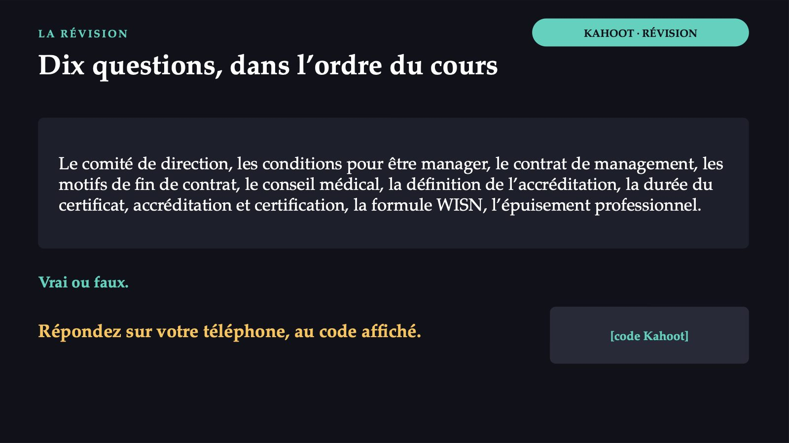
51 / 55Les réponses du jeu
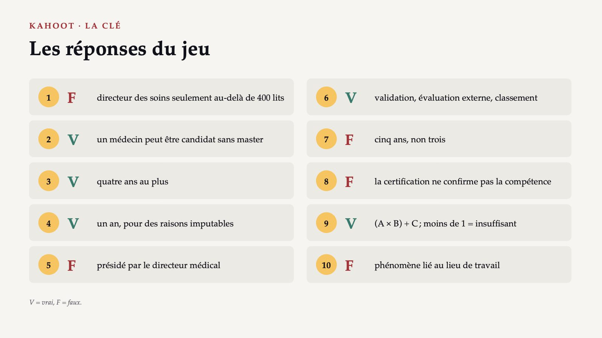
52 / 55Après trois actes
![CE QUI RESTE Après trois actes 1 L’hôpital public : un manager avec un contrat de quatre ans au plus et un comité de direction ; les lignes administrative et médicale se rencontrent dans le comité. 2 L’accréditation ANMCS : évaluation externe, certificat valable cinq ans ; sans elle, pas de contrat avec la caisse d’assurance maladie. 3 Le RENAR accrédite les laboratoires et les organismes de certification ; la certification ISO confirme un système de management. 4 La méthode WISN : les besoins à partir du travail réel, (A × B) + C ; le rapport montre la pression de travail. Les trois actes : qui répond, sur quelles preuves, devant qui.](diapozitive/C09/053.jpg) 53 / 55
53 / 55Ce que vous ferez autrement, comme résident
![LUNDI MATIN Ce que vous ferez autrement, comme résident 1 Quand vous commencerez votre résidanat, cherchez l’organigramme : sachez qui est le chef de service, qui est le directeur médical et qui répond de la qualité. 2 Quand on vous demande « encore une garde », rappelez-vous que l’épuisement est un problème du lieu de travail, non une faiblesse personnelle ; dites-le à ceux qui organisent le planning. 3 Quand un évaluateur vous demande comment vous travaillez, dites comment vous travaillez réellement. À l’Hôpital départemental A, les évaluateurs parleront avec des médecins, des infirmières et des patients.](diapozitive/C09/054.jpg) 54 / 55
54 / 55Avant de partir
55 / 55Flèches ou espace : navigation · O : vue d’ensemble · N : notes de l’intervenant · F : plein écran · Échap : fermer